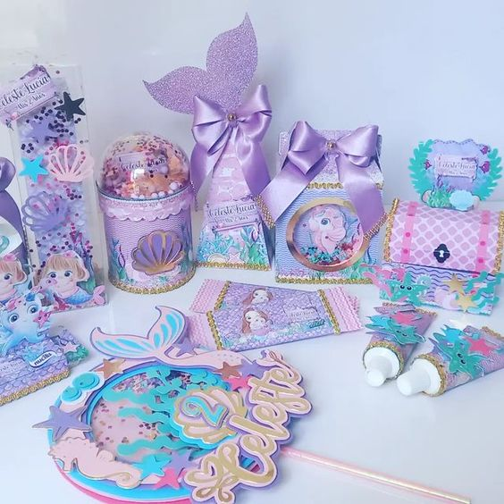
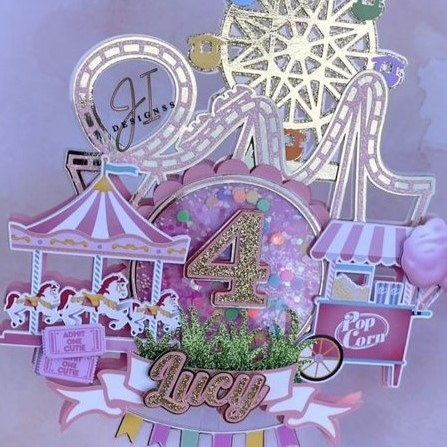

Papelería creativa
La papelería creativa es un tipo de arte dedicado al diseño y creación de piezas temáticas decorativas y personalizadas, haciendo de cada una de ellas, algo único y especial.

Sublimación
La sublimación es una técnica que permite transferir una ilustración personalizada a playeras, sudaderas, tazas, termos, llaveros y mucho más

Cake Toppers
La papelería creativa es un tipo de arte dedicado al diseño y creación de piezas temáticas decorativas y personalizadas, haciendo de cada una de ellas, algo único y especial.